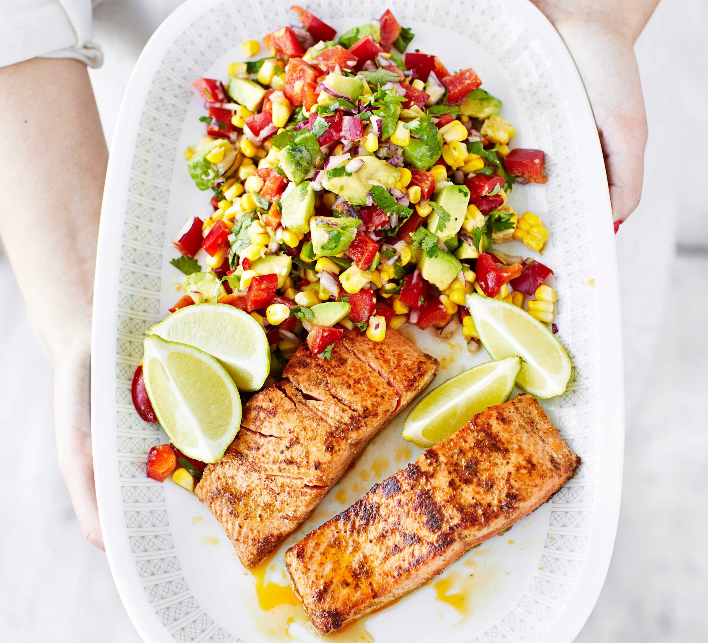

Min favoriträtt med lax
Enkel och snabb att tillaga!

- Lax:
- 4 bitar laxfilé utan skinn (à 125 g)
- 2 dl crème fraiche (34%)
- 1 tsk salt
- 1 krm malen vitpeppar
- skal och saft av 1/2 citron
- Sätt ugnen på 175°C.
- Lägg laxen i en smord ugnssäker form.
- Skrubba och skölj citronen i ljummet vatten. Riv skalet av citronen utan att få med det vita.
- Blanda crème fraiche med salt, peppar, citronskal och -juice plus din valda smaksättning.
- Bred blandningen över laxbitarna.
- Baka laxen mitt i ugnen ca 20 minuter.
- Till servering: Servera laxen med kokt potatis och en fräsch sallad.
Mer Info:
Under 30 Minuter,
13 Ingredienser,
Medelsvår att tillaga